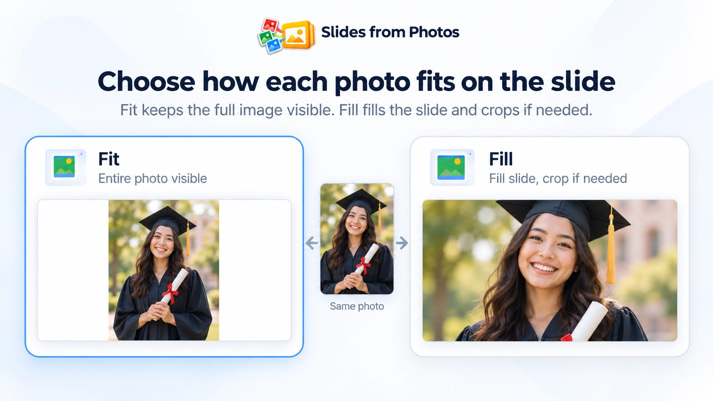

Can I put multiple photos into separate Google Slides automatically?
Yes. Slides from Photos takes a selected batch of photos and creates one Google Slide for each photo.
Slides from Photos guide
Turn a batch of photos into Google Slides automatically — one photo per slide, in the order you choose.
If you have dozens or hundreds of photos, inserting each one manually gets repetitive fast. Google Slides can insert images from several sources, but the missing workflow is automatically taking a whole batch and putting each image on its own new slide.
Slides from Photos is a Google Slides add-on by DZS Labs built for exactly that job: choose your photos, review the batch, choose the order, select Fit or Fill, and create one slide per photo.
Yes — you can put multiple images on separate Google Slides without inserting them one by one. Slides from Photos takes a selected batch and creates one slide for each photo. It supports photos from Google Drive, Google Photos, and your computer.
Instead of repeating insert, resize, and position actions for every image, you make the batch decisions once and let the add-on create the slides as a batch.
Slides from Photos is a Google Slides add-on from DZS Labs for turning a collection of photos into a presentation with one photo per slide. It is designed for batch workflows rather than presentation design or AI-generated content.
The workflow focuses on a few things that matter when you already have the photos: source selection, photo order, Fit or Fill, visible progress, resume after an interruption, and a clear completion result.
Fit keeps the entire photo visible inside the slide. Depending on the photo’s aspect ratio, this can leave empty space around the image.
Fill fills the slide while preserving the photo’s proportions. To fill the whole slide, some edges may be cropped.
Use Fit when keeping the entire image visible matters most. Use Fill when you want the slide covered edge to edge.

Choose photos stored in Google Drive and turn the selected batch into slides.
Select photos from Google Photos and create one slide per selected photo.
Upload photos from your computer, review the batch, and create the slides from the uploaded selection.
For a few images, manual insertion is manageable. For a larger set, the repeated work becomes the problem: insert an image, create or switch slides, resize or crop it, repeat, and keep the order correct.
A batch workflow removes that repetition. You select the photos once, review the order once, choose the placement mode once, and then create the presentation as a batch.
The goal is not to replace Google Slides editing. It is to remove the repetitive setup work before you continue editing the presentation normally.
Slides from Photos is designed for larger photo batches. While the presentation is being created, you can see progress instead of waiting without feedback.
If processing is interrupted, the add-on can resume supported jobs instead of forcing you to restart the entire batch. At the end, the result reports what completed and surfaces skipped or failed items when applicable.
Exact selection behavior can depend on the photo source, so this page does not make a universal one-click volume promise.
Google Slides supports inserting images, including from several sources. But its standard image-insertion workflow is not the same as selecting a batch and automatically creating a separate new slide for every selected image.
That specific one-photo-per-slide workflow is what Slides from Photos is built to automate.
Yes. Slides from Photos takes a selected batch of photos and creates one Google Slide for each photo.
Yes. The core workflow is one selected photo per created slide.
Yes. Google Photos is one of the supported photo sources.
Yes. Google Drive is supported.
Yes. You can select photos from your computer, review the batch, and create slides from them.
Fit keeps the entire photo visible. Fill covers the slide while preserving image proportions, which can crop the edges.
The add-on is designed for larger batches and includes progress and resume behavior. Exact selection behavior can vary by source, so use source-appropriate workflows rather than assuming every source supports the same selection size in one step.
No. It does not generate presentation content. It automates the workflow of turning an existing collection of photos into separate Google Slides.
Create one slide per photo from the sources you already use, then continue editing normally in Google Slides.
Install Slides from Photos